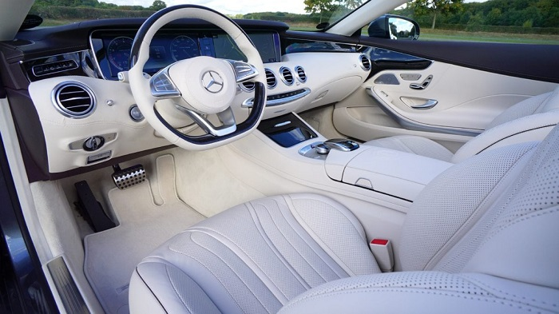
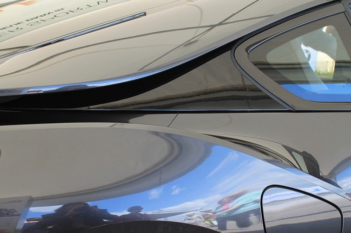

Typer av rekonder

Invändig rekond
När det är insidan som räknas så är vår invändiga rekord perfekt. Där rengör vi allt och lite till. Vi tar till och med bort plastlister för att ge denna ultimata känslan. Vi gör rent klädslar och ta bort de absolut tuffaste fläckarna. Vi eventuellt behov kan vi till och med reparera eventuella slitageskador på skinnklädsel
Polering
Lacken på bilen är det första man ser så varför inte göra den till den bästa. Vi gör en 4 stegs polering där vi börjar med en ”claybar” för att få lacken ren på djupet. Sedan använder vi en rubbing som tar bort eventuella repor och oxidation. Där efter väntar en polering för få upp lackens glans. Sist men viktigast är en vaxlager som skyddar bilen lack upp till ett år framöver.Helrekond
Vill du verkligen skämma bort din bil så är en helrekond bästa valet. I helrekonden igår både polering och en invändig rekond. För den som älskar sin bil.
Pågrund av att storleken på bilen har stort påverkan på jobb och tid som behövs läggas ner. Därför kan det bli dyrara om du äger en större bil.
Småbil
Sedan
Kombi
Suv
Kostnader
Pågrund av att storleken på bilen har stor påverkan på jobb och tid som behövs läggas ner. Därför kan det bli dyrara om du äger en större bil.Invändig rekond
Småbil-720krSedan-900kr
Kombi-1080kr
Suv-1080kr
Polering
Småbil-1280krSedan-1600kr
Kombi-1920kr
Suv-1920kr
Helrekond
Småbil-1920krSedan-2400kr
Kombi-2880kr
Kombi-2880kr